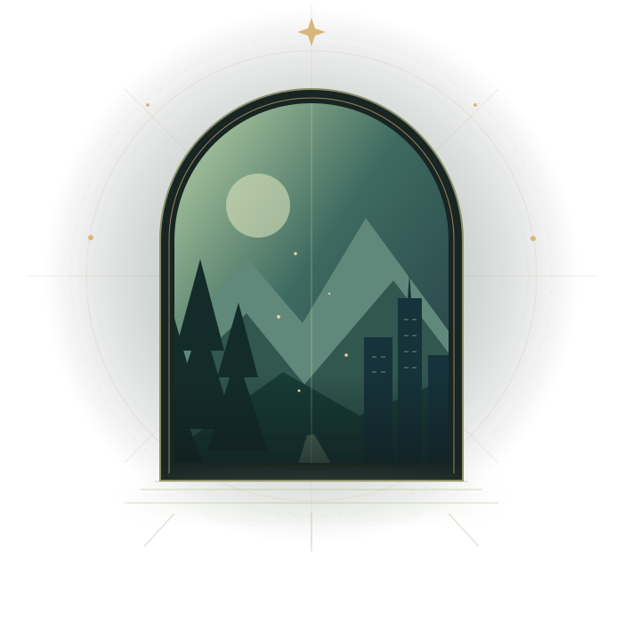

THE REALM OF MAGIC
Arcana Reality
Follow the roots of ancient kingdoms, discover displaced relics and descend into living labyrinths. Dragons, golems, elves and forgotten guardians await.
Enter Arcana ↗Ancient magic. Classified mysteries. A character only you could create. Welcome to Crossworlds—the home of Arcana Reality, the C.I.A., and the RPG bot that brings your adventures to Discord.

Enter the realm that speaks to your character. Their physical merger belongs to a future chapter—not the beginning of your adventure.
Follow the roots of ancient kingdoms, discover displaced relics and descend into living labyrinths. Dragons, golems, elves and forgotten guardians await.
Enter Arcana ↗Investigate cryptid activity, explore the agency archives and enter unstable trial chambers. Your field kit might be the only predictable thing in the room.
Open the agency dossier ↗The Crossworlds Discord bot keeps the mechanics together while you focus on the moments that matter.
Submit an original character, save their lore and inventory, then speak in their voice with character prefixes and an HP panel.
/character profile · /sayExplore class, species and personal trees. Awaken a permanent signature skill and evolve it at levels 10, 25, 50 and 75.
/skills tree · /skills uniqueExplore persistent 9×9 floors alone or in a squad. Meet merchants, face bosses and carry your remaining HP into the next room.
/dungeon crawl · /mapFind a job, play its mini-game, earn money and purchase usable gear. Daily quests reward your performance.
/job · /work · /shopA friendly, patient and lightly witty companion. Cross supports roleplay and conversations using your configured local model.
Cross, help me with my OC.Admins publish lore as Cross, create creatures, award blessings and build dungeons. Training duels offer another way to grow.
/admin lore create · /duelYour character doesn't need to know where the journey ends. Just where it begins.
Open the beginner’s guide ↗/start to find your way around.